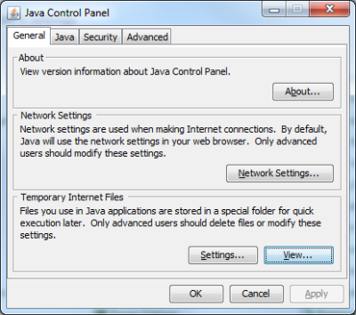
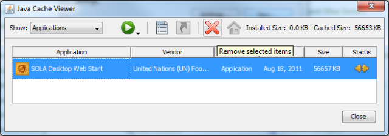
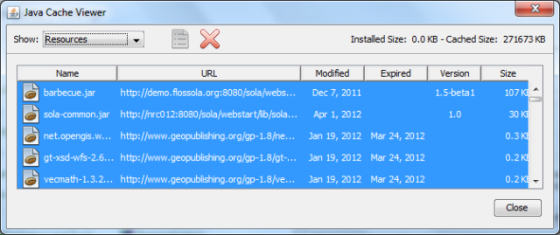

Uninstall
To uninstall the Registry Desktop or Registry Admin from your computer
-
-
Launch the Java Control Panel. On Windows you should find “Java” in Windows Control
Panel. You may need to change from Category View to an Icon View to make it easier to
find. If you have Vista or Windows 7, you should also be able to search for “Java
Control Panel” from the Start Menu search.
-
Choose View... in the Temporary Internet Files section of the General tab

Java Control Panel
-
-
In the Java Cache Viewer, select the SOLA Desktop Web Start application or the SOLA
Admin Web Start application and remove it using the Remove tool. This will remove your
desktop shortcut to SOLA and the main jar for the application

Java Cache Viewer - Applications
-
-
To completely remove all references and jar’s used by the SOLA Application you should
also clear the Resources cache. To do this, choose Resources in the Show: drop down,
select all of the resources listed and remove them using the Remove tool.

Java Cache Viewer - Resources